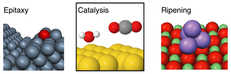
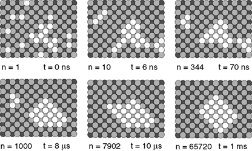

eOn: Long Timescale Dynamics Software¶
The eOn software package contains a set of algorithms used primarily to model the evolution of atomic scale systems over long time scales. Standard molecular dynamics algorithms, based upon solving Newton’s equations, are limited by the femtosecond time scale of atomic vibrations. eOn simulations are designed for rare event systems where the interesting dynamics can be described by fast transition between stable states. In each algorithm, the residence time in the stable states is modeled with statistical mechanics, and the important state-to-state dynamics are modeled stochastically.
The algorithms currently implemented include parallel replica dynamics, hyperdyamics, adaptive kinetic Monte Carlo, and basin hopping.
Supported systems¶
eOn can handle both molecular systems (e.g. gas-phase reactions) and extended (surface) systems, with robust periodic image boundary support.

An overview of some systems modeled with eOn¶
However, the systems which are best modeled using eOn are those in which the important kinetics are governed by rare events. Diffusion in solids and chemical reactions at surface are particularly suitable when there is a clear separation of time scales between atomic vibrations at the diffusion or catalytic events of interest.

Al(100) ripening dynamics¶
In the example showing ripening dynamics on an Al(100) surface, a compact
island forms after 65720 transitions in a time scale of a ms at 300K.
Interatomic Interactions¶
There are a variety of empirical potentials included with eOn. You can also
use the potentials built into the LAMMPS library. eOn also provides an
interace to the VASP and GPAW density functional theory codes.
Added in version 2.0: eOn now supports additional potentials
Getting started¶
See the installation instructions, but in a line:
micromamba install -c conda-forge eon
# single point calculation, Lennard-Jones
eonclient -s molecule.con -p lj
# or with a config.ini and pos.con file
eonclient # reads config.ini and runs
# or for akmc, needs config.ini and pos.con
python -m eon.server
Getting help¶
We support a variety of methods to provide assistance:
Github Issues :: For bug reports and software errors, open issues
Community Forum :: eOn has a section on the Materials Science Community Discourse
Supporting packages¶
Additional visualization and parsing may be found in the rgpycrumbs diagnostic
suite (Home,
Github,
PyPI).
User Guide¶
Contents
- eOn Team
- Installation
- Obtaining sources
- Licenses
- Tutorials
- User Guide
- External Potential
- LAMMPS Potential
- ASE Interface
- Metatomic Interface
- QUIP with LAMMPS
- MPI Potential
- Choosing an algorithm
- General Simulation Parameters
- Potential
- Structure Comparison
- Optimizer
- Minimization
- Nudged Elastic Band
- Dimer method
- Lanczos
- ARTn (Activation-Relaxation Technique nouveau)
- Hessian
- Prefactor
- Adaptive Kinetic Monte Carlo
- Saddle Search
- Basin Hopping
- Process Search
- Recycling
- Coarse Graining
- Dynamics
- Parallel Replica
- Hyperdynamics
- Communicator
- Debug
- Paths
- Kinetic Database
- Serve Mode
- Development Documentation
- API Reference
- Releases
- Changelog
- [v2.14.0] - 2026-XX-XX
- [v2.13.0] - 2026-XX-XX
- [v2.12.0] - 2026-03-08
- [v2.11.2] - 2026-03-02
- [v2.11.1] - 2026-03-01
- [v2.11.0] - 2026-02-24
- [v2.10.2] - 2026-02-22
- [v2.10.1] - 2026-02-18
- [v2.10.0] - 2026-02-15
- [v2.9.0] - 2026-01-27
- [v2.8.2] - 2025-12-01
- [v2.8.1] - 2025-11-03
- [v2.8.0] - 2025-09-04